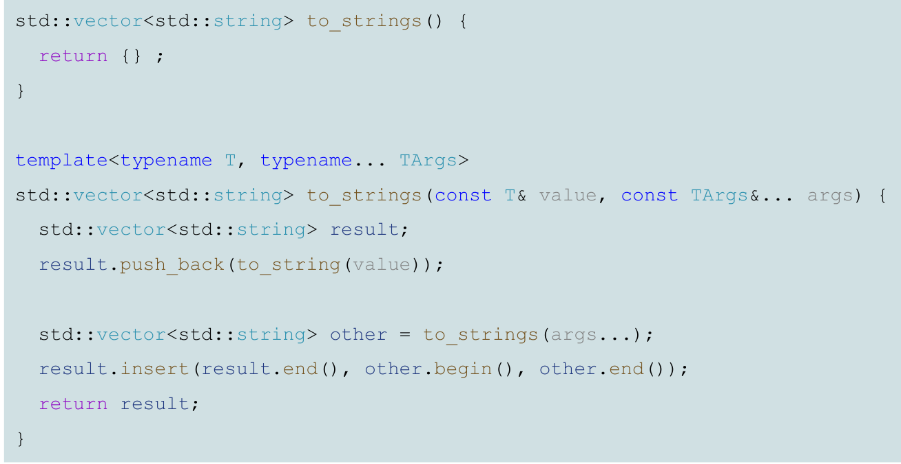
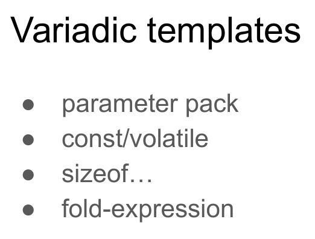
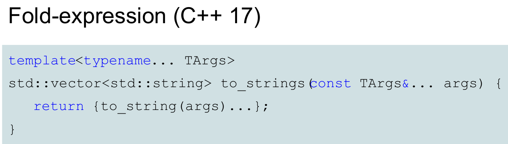
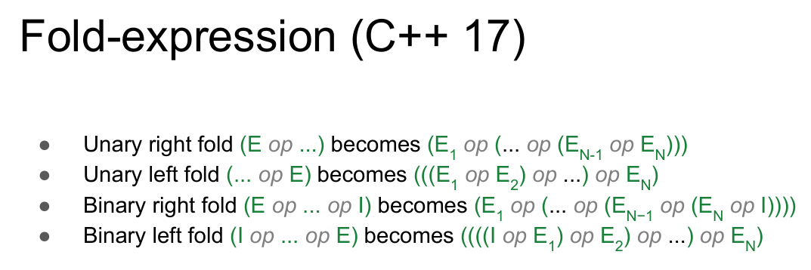
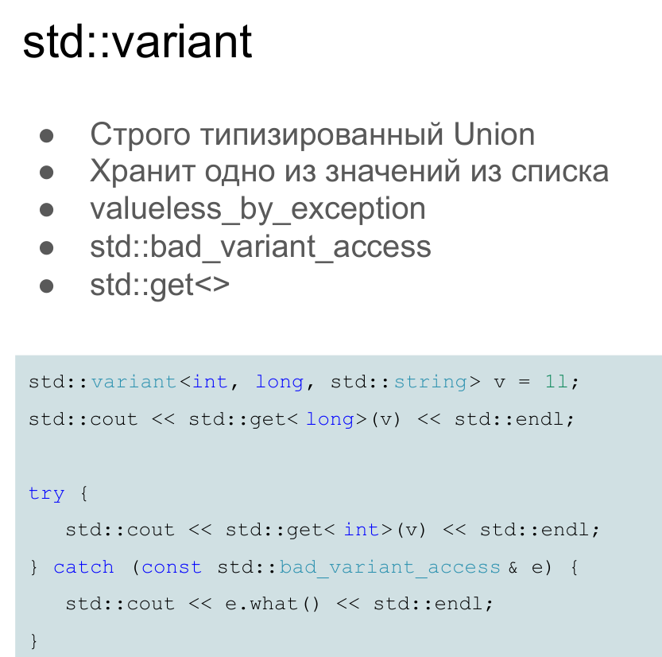
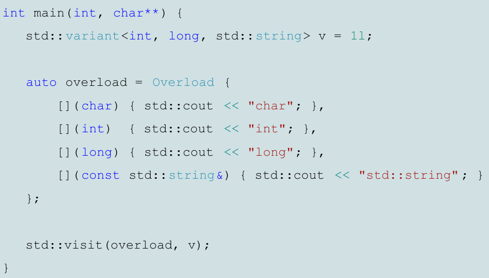

Вариативные шаблоны, variant и visit
Теория, примеры и иллюстрации по теме.
Variadic template
Пакет шаблонных параметров позволяет принимать переменное число типов или значений.

В рекурсивном варианте отдельно обрабатывается первый аргумент, а оставшийся пакет передаётся следующему вызову.
sizeof...
template<typename... Args>
void printCount(Args... args) {
// Возвращает количество аргументов, переданных в функцию
std::cout << sizeof...(args) << std::endl;
}
параметр пак - несколько аргументов sizeof... - работает на этапе компиляции Выражение свёртки (fold expression) применяет бинарный оператор к элементам пакета параметров.

Fold expression Есть левый fold есть правый fold Бинарный и унарныйComma fold pattern (свёртка с запятой) — это синтаксис C++17, использующий Fold Expressions (свёртку пакетов параметров). Он позволяет применять действие к каждому элементу variadic-шаблона, используя оператор запятая (,) для последовательного выполнения операций. Формат (..., действие(аргументы)) выполняет все действия по порядку
Правила ввода типов -> компилятор сам умеет выводить типы
std::variant

std::variant — это типобезопасный аналог объединения (union) из C, представленный в C++17. Он хранит в одной переменной значение одного типа из заданного набора. Variant знает, какой тип данных в нем хранится, обеспечивая безопасный доступ и предотвращая ошибки, связанные с неправильной интерпретацией данных, типичные для union.
std::variant — это переменная “один из этих типов”.
Строго типизированный юнион
std::visit
— это способ безопасно обработать значение, которое лежит внутри std::variant
То есть visit как будто говорит: “посмотри, какой тип сейчас внутри variant, и передай его в эту функцию”

Пример CRTP Это enebled_shared from this